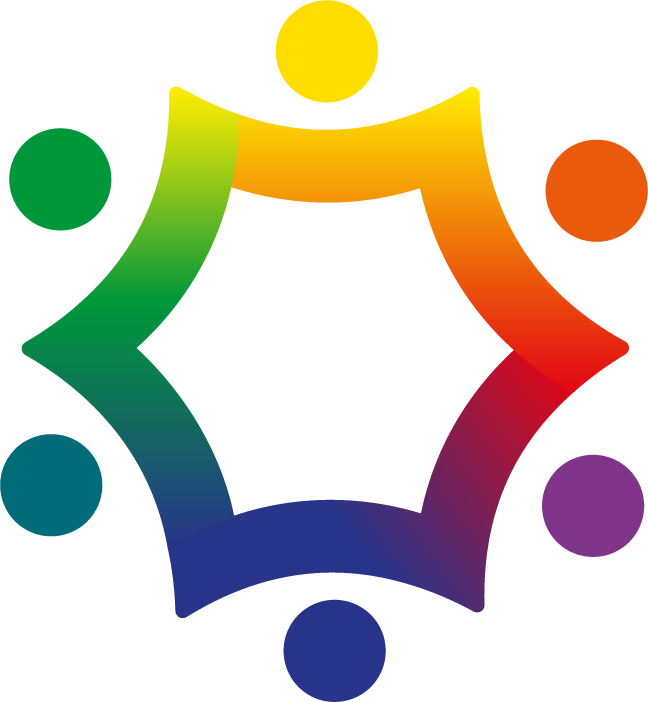
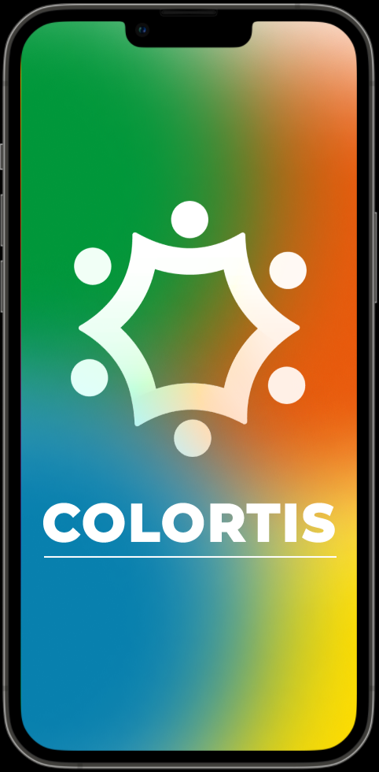
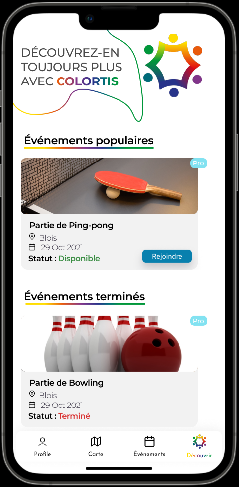
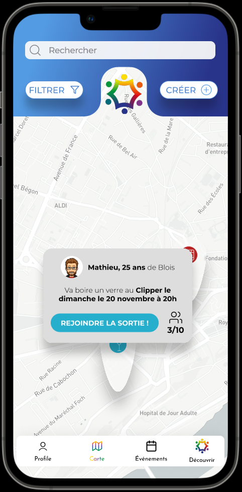
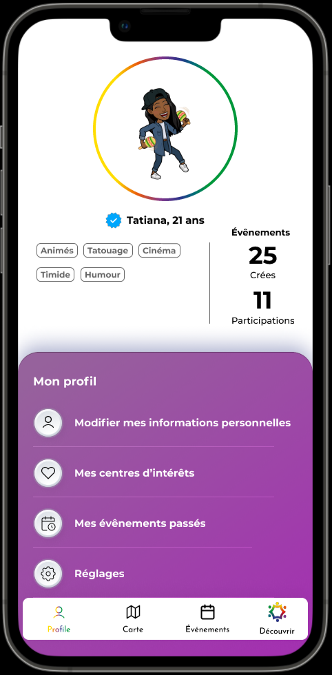

Equipe
6 personnes.
Temps
1 week-end
Technologies
Figma
Context
Projet présenté lors du startup week-end Blois 2022. Il a remporté le prix "coup de cœur".
Résumé
Colortis est un projet d'application visant à lutter contre la solitude. L'utilisateur s'inscrit sur l'appli puis peut au choix proposer une sortie ou en rejoindre une près de chez lui afin de rencontrer de nouvelles personnes.
Equipe |
6 personnes. |
Temps |
1 week-end |
Technologies |
Figma |
Context |
Projet présenté lors du startup week-end Blois 2022. Il a remporté le prix "coup de cœur". |
Résumé |
Colortis est un projet d'application visant à lutter contre la solitude. L'utilisateur s'inscrit sur l'appli puis peut au choix proposer une sortie ou en rejoindre une près de chez lui afin de rencontrer de nouvelles personnes. |



